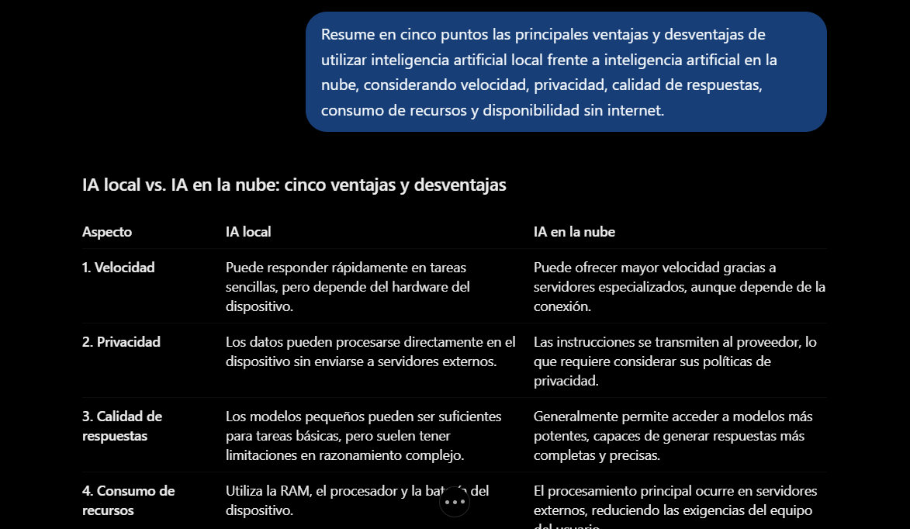

1. Evidencia del laboratorio
Comparación del rendimiento de modelos de inteligencia artificial ejecutados localmente mediante QV.AC frente a un modelo de IA en la nube. Se consideran el consumo estimado de memoria, los tiempos de respuesta y la calidad de los resultados.
Captura parcial de ChatGPT

Evidencia 3
Evidencia 4

2. Configuraciones y memoria
La ficha original registra un portátil con Windows 11 y 16 GB de RAM. Marca y modelo quedaron sin registrar. El equipo actual es un HP Victus 15-fa1xxx con 32 GB de RAM.
El tamaño de los modelos influye en la cantidad de memoria necesaria para ejecutarlos y en los recursos computacionales utilizados durante la generación de respuestas.
| Configuración | Modelo | Parámetros | Memoria estimada a 4 bits | Disponibilidad |
|---|---|---|---|---|
| L1 | Qwen2.5-1.5B-Instruct | 1.5B | 1.5 × 0.5 GB ≈ 0.75 GB | Local sin internet |
| L2 | Qwen2.5-7B-Instruct | 7B | 7 × 0.5 GB ≈ 3.50 GB | Local sin internet |
| N | ChatGPT gratuito | No especificado | Procesamiento remoto | Requiere internet |
Ambos modelos locales caben en el equipo de 16 GB. La estimación a 4 bits corresponde aproximadamente a 0.5 GB por cada mil millones de parámetros. No incluye memoria adicional para el contexto, las activaciones, el runtime ni otros recursos necesarios.
3. Mediciones y evaluación
La predicción original fue que L1 sería más rápido entre los modelos locales porque es más pequeño y requiere menos memoria, y que L2 daría respuestas más completas por tener más parámetros.
L1 y L2 se probaron en QV.AC sin internet (modo avión). N se probó en ChatGPT gratuito con internet. La batería estaba al 85 % al inicio y al 78 % al final. Solo estaban abiertos el navegador (una pestaña), QV.AC y el cronómetro.
Para cada instrucción, iniciar el cronómetro al enviar el mensaje, anotar el tiempo hasta la primera palabra visible y detenerlo al terminar la respuesta. Anotar los tokens/s si la app los muestra. Si la app carece de esa métrica, escribir «no muestra». Guardar cada respuesta y justificar su nota de 1 a 5 con la rúbrica A.4.
| Configuración | Instrucción | Primera palabra (s) | Tiempo total (s) | Tokens/s | Calidad (1–5) | Justificación A.4 |
|---|---|---|---|---|---|---|
| L1 | 1. Resumen | 1.8 | 17.9 | ≈ 16.4 | 4 | Resume correctamente, aunque de forma general. |
| L1 | 2. Clave (A.2) | 1.9 | 18.6 | ≈ 15.9 | 4 | Da la clave (4 GB) sin explicar el cálculo. |
| L1 | 3. Lista / Plan | 1.7 | 16.8 | ≈ 17.6 | 4 | La lista es útil, aunque poco detallada. |
| L2 | 1. Resumen | 3.3 | 31.5 | ≈ 11.2 | 5 | Resumen claro, completo y bien estructurado. |
| L2 | 2. Clave (A.2) | 3.7 | 34.1 | ≈ 10.8 | 5 | Da la clave correcta (4 GB) y explica el cálculo. |
| L2 | 3. Lista / Plan | 3.4 | 32.8 | ≈ 11.1 | 5 | Plan completo, con pasos y detalles relevantes. |
| N | 1. Resumen | 0.9 | 6.9 | ≈ 31.6 | 5 | Resumen claro, breve y bien redactado. |
| N | 2. Clave (A.2) | 1.0 | 7.8 | ≈ 29.4 | 5 | Da la clave (4 GB) con una explicación clara. |
| N | 3. Lista / Plan | 0.9 | 7.4 | ≈ 30.1 | 5 | Plan claro, ordenado y con acciones concretas. |
Resultados y comparación
| Aspecto | L1 (prom.) | L2 (prom.) | N (prom.) | Ganador |
|---|---|---|---|---|
| Primera palabra | 1.80 s | 3.47 s | 0.93 s | N |
| Tiempo total | 17.77 s | 32.80 s | 7.37 s | N |
| Tokens/s | ≈ 16.6 | ≈ 11.0 | ≈ 30.4 | N |
| Calidad | 4.0 | 5.0 | 5.0 | Empate entre L2 y N |
N redujo el tiempo total promedio en un 58.5 % frente a L1 y en un 77.5 % frente a L2.
4. Evaluación de privacidad y aplicaciones
| Aspecto | IA local | IA en la nube |
|---|---|---|
| Conectividad | Puede funcionar sin internet después de descargar el modelo. | Requiere conexión para enviar solicitudes y recibir respuestas. |
| Procesamiento | Se realiza directamente en el dispositivo. | Se realiza en servidores del proveedor. |
| Privacidad | Las instrucciones pueden permanecer en el dispositivo. | Las instrucciones se transmiten al proveedor para su procesamiento. |
| Recursos | Depende de la RAM, el procesador y la capacidad del dispositivo. | Utiliza infraestructura computacional remota. |
| Uso recomendado | Resúmenes, clasificación y tareas sencillas sin conexión. | Tareas complejas que requieren mayor capacidad de razonamiento. |
5. Reflexión y aprendizajes
La nube obtuvo el menor tiempo total promedio (7.37 s) y empató con L2 en calidad (5.0). La predicción se cumplió: L1 fue el más rápido entre los modelos locales y L2 obtuvo una mejor nota que L1.
El modelo local pequeño podría utilizarse en nuestra venture para tareas como resumir información general, organizar documentos, clasificar mensajes o generar borradores sencillos sin depender de una conexión permanente a internet. Sin embargo, no sería nuestra primera opción para análisis complejos, planificación financiera, generación de reportes detallados o procesos que requieren alta precisión y razonamiento avanzado. Para estos casos sería necesario evaluar modelos más capaces y mantener mecanismos de validación humana.
Al ejecutar un modelo local sin conexión, las instrucciones se procesan dentro del dispositivo y no necesitan enviarse a servidores externos. Esto permite mantener mayor control sobre la información utilizada durante la interacción. En cambio, al utilizar un modelo en la nube, las instrucciones se transmiten al proveedor del servicio para generar la respuesta. Aprendimos que la elección entre IA local y en la nube no debe depender únicamente de la velocidad o la calidad, sino también de los requisitos de privacidad, disponibilidad y seguridad de cada aplicación.
Conclusión general
Este laboratorio nos permitió comprender de manera práctica las diferencias entre ejecutar modelos de inteligencia artificial directamente en un dispositivo y utilizar servicios de IA alojados en la nube. Aprendimos que el rendimiento de un modelo depende de factores como su cantidad de parámetros, el consumo de memoria, la capacidad de procesamiento del equipo y la infraestructura disponible. En las tres instrucciones, el modelo local más grande obtuvo mejores notas y tardó más en responder.
Además, comprendimos que evaluar una inteligencia artificial requiere considerar tanto métricas cuantitativas, como el tiempo hasta la primera palabra y el tiempo total de generación, como criterios cualitativos relacionados con la precisión, claridad y utilidad de las respuestas. Finalmente, identificamos que la IA local representa una alternativa importante para aplicaciones que necesitan funcionar sin conexión o mantener mayor control sobre sus datos, mientras que los servicios en la nube pueden ofrecer ventajas de rendimiento y capacidad. La principal enseñanza es que no existe una configuración ideal para todos los escenarios: la mejor elección depende del equilibrio entre velocidad, calidad, recursos disponibles, privacidad y necesidades del usuario.